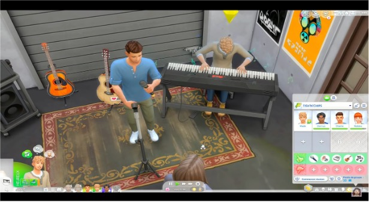
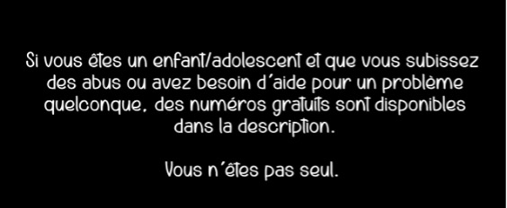

Pouvoir partager sa passion de jeux vidéo est devenu un élément central dans la pratique vidéoludique. L’arrivée d’internet a d’autant plus facilité le partage de guides, la création de communautés ou encore le partage de parties de jeu sur des plateformes en ligne. Dans cet article, nous avons étudié l’appropriation par les femmes du jeu The Sims 4 et l’expression de soi par le biais de partages de vidéos (machinima et let’s play) sur la plateforme YouTube. Nos analyses ont permis de mettre en évidence des similarités et des dissonances avec des études antérieures. Notamment l’augmentation de l’autonomie des femmes et leurs réticences à s’auto-identifier comme joueuses. Nous avons démontré, par la suite, que l’appropriation d’un jeu ainsi que l’expression de soi par l’intermédiaire de vidéo en ligne est limitée par la structure du jeu.
Partager une passion peut se faire de plusieurs manières. Dans le contexte des jeux vidéo, la passion se partage par l’intermédiaire de discussions, de guides ou encore de parties de jeu sur internet. C’est le cas des machinimas et des let’s play qui permettent non seulement de partager la passion du jeu, mais permet aussi aux machinamakers 1 de partager leurs idées avec le reste du monde (Bonenfant & Trépanier-Jobin, 2018). Le terme machinima est issu de la contraction des termes machine et cinéma introduit par Hugh Hancock. Le let’s play est considéré comme un machinima non narratif par Glas (2015). Ce dernier est définit comme un enregistrement ou diffusion vidéo qui contient des images de jeu avec des commentaires du joueuse.eur.s. La plupart des études menées sur les pratiques de partages de vidéos de jeu en ligne se concentrent uniquement soit sur le machinima soit sur le let’s play. Pourtant, étudier la combinaison des machinimas et des let’s play permet une compréhension approfondie de l’expression de soi en ligne. Partant du constat que le machinima et le let’s play sont une continuité des jeux vidéo et que le monde vidéoludique est aujourd’hui toujours hostile à la présence des femmes (Paaßen et al., 2017 ; Stone, 2019 ; Williams et al., 2009), nous analyserons, dans cet article comment les femmes s’approprient le jeu The Sims 4 et comment elles s’expriment par l’intermédiaire de machinima et de let’s play sur la plateforme YouTube. Après avoir fait un aperçu des études mené sur le sujet, nous allons discuter de l’auto- identification des femmes en tant que joueuses avant de parler des stratégies relationnelles sur la plateforme YouTube. Ensuite, nous allons discuter de l’appropriation du jeu The Sims 4 pour performer des histoires qui vont à l’encontre des stéréotypes de genre.
Jouer à un jeu vidéo est un phénomène culturel qui est devenu très populaire ces dernières années. On entend par « jouer » une activité vidéoludique qui consiste à s’approprier un jeu vidéo. En effet, il y a différentes façons d’aborder un nouveau jeu, mais que ce soit explorer un vaste monde ou créer soit même un monde, il y a, à degrés différents, une forme d’appropriation du jeu. On entend par appropriation la liberté qu’à le jouer d’interpréter et de mener des actions dans le jeu (Bonenfant, 2008). Comme l’a relevé Genvo (2008), « le jeu pour exister doit permettre l’expression de la créativité de l’individu ». Genvo illustre ses propos avec l’exemple d’un enfant qui modifie les règles de jeu établies tout en adaptant l’activité à leur représentation mentale de ce qui est ludique. Dans les jeux vidéo, les règles sont moins facilement modifiables du fait de leur support informatique. De ce fait, les différentes formes d’activités ludiques dans un jeu vidéo ne signifient pas toujours qu’il y a appropriation du jeu, cela s’inscrit au contraire dans une culture de l’industrie du jeu vidéo. Plus précisément, il ne peut y avoir de négociation de règles du jeu uniquement si le constructeur du jeu l’autorise. Ainsi, il y a une appropriation du jeu à différent degré, cependant, ces actions ne sont possibles que parce que cela est toléré par le jeu. Dans la continuité de l’appropriation du jeu, il existe la création de films par l’intermédiaire des performances du jeu, le film ainsi créé s’appelle « machima ». Contrairement aux règles définies dans un jeu, le machinima est une activité qui détourne le jeu (Barnabé 2015). Un détournement est un œuvre artistique qui réécrit le jeu. Le machinima peut avoir plusieurs objectifs notamment, archiver un jeu ou une communauté de jeu (Lowood 2011), servir de matériel pédagogique (Muldoon et al., 2008) ou encore raconter une histoire propre au machinimamaker (Barnabé, 2015). Plusieurs études ont été menées sur les machinimas, c’est notamment le cas de Nitsche (2005) qui définit le machinima comme l’utilisation de moteurs de jeu 3D pour générer une performance enregistrée dans des mondes virtuels. Le détournement du jeu par l’intermédiaire du jeu peut donc prendre plusieurs formes. C’est-à-dire que le machinimamaker peut utiliser différentes parties du jeu pour produire son film. Ces parties concernent notamment, le(s) cinématique(s), l’environnement du jeu, les avatars du jeu, mais aussi la manière dont le jeu est joué. Cependant, dans la globalité, il existe deux styles de machinima, selon l’usage dont est fait le jeu : le style objectif qui utilise le jeu dans son ensemble et le style subjectif qui utilise le jeu comme simple outil (Barnabé 2015).
Il existe une forme de machinima que l’on appelle non narrative (Glas 2015). Cette forme de machinima est également connue sous le nom de « let’s play ». Un let’s play est un enregistrement ou diffusion vidéo qui contient des images d’un jeu avec des commentaires du joueuse.eur.s. Les commentaires peuvent être diffusés en version audio, ou en version vidéo où joueuse.eur.s s’affichent dans un coin de l’écran. Durant les let’s play les vidéastes peuvent commenter le jeu de sorte à le critiquer, le promouvoir, l’examiner ou à en faire une parodie (Burwell & Miller, 2016). Il n’y a pas de règle unique à la manière de faire de let’s play, en effet, il existe différentes manières de montrer des séquences de gameplay (Kerttula, 2019). Lors d’un let’s play les joueuse.eur.s peuvent mettre en avant leurs compétences, cependant, le but d’un let’s play est souvent de montrer aux autres joueuse.eur.s comment mener à bien une quête ou encore comment améliorer son jeu. Les let’s play ont ainsi une fonction pédagogique qui invite le spectatrice.eur à jouer au jeu. La forme non narrative du let’s play viens du fait que le public regarde non seulement l’œuvre, mais également l’artiste commenter son œuvre. En effet, dans un machinima, le public regarde avant tout une œuvre artistique tandis que dans un let’s play, le public regarde non seulement le jeu (l’œuvre), mais aussi la créatrice.eur commenter son œuvre. En effet, le let’s play présentent avant tout un gameplay et non un récit (Glas 2015). Les machinimas et les let’s play sont partagé par les artistes sur des plateformes de diffusion tels que Twitch, YouTube et Facebook Gaming. Ces plateformes ont été l’objet de plusieurs études. C’est encore plus le cas de Twitch lorsqu’on parle de diffusion de jeux vidéo. Ces études concernent plusieurs aspects de la plateforme, mais dans le cas présent, nous nous intéressons plus spécifiquement à la place des femmes. Les études qui ont été menées sur ce sujet se sont intéressées à l’analyse des commentaires (Nakandala et al., 2016), la présentation des femmes (Uszkoreit, 2018), la concurrence, le sexisme et le harcèlement dont elles sont victimes (Anderson, 2017 ; Ruberg, 2021 ; Ruberg et al., 2019) et les stratégies qu’elles mettent en place pour pallier ces obstacles (Sjöblom et al., 2019). Comme dit précédemment, ces études ont été menées sur la plateforme Twitch. De plus, lors de nos recherches sur les let’s play nous avons remarqué que le sujet a été peu abordé sous un angle social. Les études universitaires publiées sur le let’s play sont souvent des recherches relatives à l’aspect juridique (Coogan, 2018 ; Hagen, 2018 ; Postel, 2017 ; Vogele, 2017), informatique (Guzdial et al., 2018 ; Nylund, 2015 ; Roitberg et al., 2021 ; Wong et al., 2017 ; Zhu, 2021), pédagogique (Mason, 2021) ou encore linguistique (Schmidt & Marx, 2021). Nous nous sommes donc intéressés aux let’s play, plus précisément, aux créations artistiques contenant des let’s play et machinima en même temps sur la plateforme YouTube.
Pour y arriver, nous nous sommes basés sur les analyses effectuées par Trépanier-Jobin (2017) sur les parodies afin de comprendre comment les machinimas remettent en question les stéréotypes de genre. Nous nous sommes également basés sur l’étude de Uszkoreit (2018) qui explore les avantages et difficultés de la diffusion en ligne de contenus vidéoludique par des joueuses. Nous avons choisi de nous inspirer de ces deux articles, car elles traitent non seulement de la question du genre dans le monde vidéoludique, mais également des contenus des vidéos publiés et des informations publiées sur la chaine des vidéastes. Nous allons ainsi dans un premier temps étudier les vidéos (machinima et let’s play) publiés par des youtubeuses et dans un second temps étudier les autres contenues publiées sur leur chaine.
Dans le cadre de cette enquête, nous avons mené une enquête auprès de sept vidéastes qui diffusent leurs parties de jeu sur la plateforme YouTube. Nous avons ainsi mené des observations sur leur chaine YouTube et avons suivi leurs comptes sur différentes autres plateformes. Ce sont des plateformes sur lesquelles elles nous invitent à les suivre pour avoir plus de contenus. Nous avons limité la collecte de données aux youtubeuses qui remplissaient les critères suivants : 1) être une femme 2) créations de machinima ainsi que diffusion de Let’s play, 3) active au cours de l’année écoulée et dont l’archive vidéo est librement accessible. Étant donné que nous souhaitons étudier l’appropriation des jeux par les femmes nous avons choisi uniquement des youtubeuses. Le deuxième critère nous permet d’analyser la manière de jouer, mais aussi ce qui est exprimé à travers les histoires contées dans les vidéos. De plus, dans les vidéos visionnées les let’s play et les machinimas sont utilisé ensemble pour raconter la même histoire. En effet, les deux se complètent. En dernier lieu, nous avons décidé de ne pas visionner les contenus des youtubeuses qui ne sont plus actives ainsi que celles qui limitent leurs vidéos aux abonné.e.s. uniquement. L’industrie du jeu vidéo est en constante évolution, les créatrice.eur de jeu produisent continuellement de nouveaux contenus. Par conséquent les créatrice.eurs de vidéos sortent également de nouveaux contenus fréquemment afin d’avoir des contenus à jour, c’est la raison pour laquelle nous avons choisi de visionner uniquement les contenus de youtubeuses actives. Afin d’obtenir des informations sur les youtubeuses, nous avons regardé les pages de présentation de chaque chaine YouTube ainsi que ceux des pages connexes (Twitch, Instagram, Twitter, Facebook). Nous avons choisi les sept youtubeuses de manière à remplir les conditions mentionnées ci- dessus. Ainsi, les youtubeuses choisies sont issues de différents pays (France, Belgique, États-Unis et Canada), dont la moyenne d’âge est de 26 ans. Les youtubeuses qu’on a choisies ont un nombre d’abonnés allant de 50k à 284k. Nous avons choisi d’analyser 30 heures de vidéos de let’s play plus récente de Youtubeuse qui joue au Sims 4. Pour étudier les vidéos, nous avons visionné une playlist de machinima et let’s play de chaque chaine. Ensuite, nous nous sommes concentrés sur l’environnement de travail, le choix de jeu, les plateformes de communication, ainsi que les thématiques abordées dans les machinima.
L’environnement de travail exerce une grande influence sur le rendu final du machinima. Nous entendons par environnement de travail les appareils et logiciels qui permettent la création de machinima et la diffusion de parties de jeux vidéo. C’est-à-dire, toutes les caractéristiques relatives aux microphones, ordinateurs ou logiciels qu’elles utilisent pour créer leurs œuvres. Cet axe d’observation concerne également le lieu de diffusion des vidéos (le lieu du tournage, qui peut être à domicile ou dans un studio dédié), le pseudo ainsi que l’apparence qu’elles ont dans les vidéos. Nous avons choisi d’étudier cet axe, car sur YouTube la vidéaste joue un rôle. Dans sa performance, la youtubeuse choisit avec soin tout ce qui est montré à l’écran. En effet, ces derniers reflètent les centres d’intérêt et les particularités de la vidéaste et de sa chaine.
Le jeu choisi a un impact sur le rendu final des machinimas. Les youtubeuses qu’on a observées ont choisi de créer des machinimas par l’intermédiaire du jeu « The Sims 4 ». Le jeu The Sims 4 est un jeu de simulation de vie populaire créé par Will Wright. Il est développé par Maxis et publié par le studio EA (Electronic arts). Le jeu The Sims 4 est un jeu qui permet de créer des personnages, construire et meubler des maisons pour eux, leur trouver des emplois et des amis (Wark, 2006). Le jeu est une allégorie de la vie quotidienne dans la société de consommation (Sicart, 2003). En effet, le jeu les sims ne contiens pas de monstre à tuer ou d’objectif à atteindre. Les joueuse.eur.s sont libres d’effectuer les actions qui leur conviennent de faire pour améliorer ou non la vie de leurs sims (Pettini, 2021). Cependant, il existe dans le jeu un objectif plus abstrait que les joueuse.eur.s sont libres de suivre ou non, mais qui leur permettrait d’améliorer leur jeu. C’est ce que Frasca Gonzalo (2003) appelle le style de jeu « padia ». Le style de jeu padia étant le contraire du style ludus. Plus précisément, le style padia offre une liberté aux joueuse.eur.s là où le ludus mets en place des règles strictes. Nous avons choisi d’étudier les vidéos relatifs au jeu The Sims 4, car ce dernier est un jeu de type padia qui permet à ces utilisatrice.eur.s de raconter des histoires qui leur sont propres.
Sur YouTube, les joueuses qu’on a suivies publient des liens qui permettent à leurs abonné.e.s. de les suivre sur d’autres plateformes. Il est possible de trouver des liens redirigeant vers ces autres plateformes sous les vidéos publiés ou dans la section « à propos ». Nous avons choisi d’étudier les informations sur les plateformes connexes afin d’étudier la relation entre la youtubeuse et ses abonné.e.s.
Dans cette partie de l’observation, nous nous sommes concentrés sur le contenu des vidéos, plus précisément sur les histoires racontées par les vidéastes. La question que l’on se pose dans cette partie est de savoir quelles sont les thématiques les plus abordées par les vidéastes lors des let’s play et machinima.
Nous avons, tout d’abord, commencé par découvrir ce que les vidéastes publient sur elles- mêmes sur les réseaux sociaux. Plus précisément, nous avons essayé de savoir comment elles se présentent. Pour ce faire, nous avons regardé leurs descriptions dans la page « à propos » sur leur chaine YouTube, nous avons également regardé sous les vidéos qu’elles publient pour vérifier si elles n’ajoutent pas d’information en plus dans cette espace. Dans la page « à propos », les descriptifs peuvent être détaillés (5 phrases environ) ou concis. Par exemple, une des youtubeuses a écrit dans son descriptif :
« sul sul lofi + sims »
Tandis qu’une autre détaille un peu plus en s’exprimant ainsi :
« ✧ﾟ･: * Hello internet, moi c’est Kali.
Je vous souhaite la bienvenue dans mon univers, j’espère que vous vous y sentirez bien. Il se passe plein d’histoires dans ma tête et j’essaie de les mettre en forme dans les Sims, à travers des machinimas, des let’s play et aussi des constructions.
💜N’hésitez pas à vous abonner et à me suivre sur mes réseaux sociaux, ça réchauffe mon cœur et m’encourage à partager mes créations. Merci pour votre soutien, prenez soin de vous.* : ･ﾟ✧ »
Nous remarquons que sur les sept descriptions que l’on a regardées, les youtubeuses expliquent les activités qu’elles effectuent sur leur chaine. Par la suite, nous voyons en bas de ces descriptions des liens vers leurs pages annexes. Il s’agit la plupart du temps de : Twitch, Instagram, Twitter, Discord, Tumblr et Utip. Nous avons visité ces pages connexes afin de savoir comment elles se présentent sur les autres réseaux sociaux.
Sur Twitch, les vidéastes ont la possibilité de se présenter dans la partie « bio », mais aussi en bas de leurs photos de profil. Ainsi, sur cette plateforme nous avons deux descriptifs, une un peu plus détaillée que l’autre. Cependant, sur les sept vidéastes suivis, seule deux ont un compte Twitch. C’est par l’intermédiaire de ces comptes qu’on a découvert que la première youtubeuse est canadienne, mariée, qu’elle a deux huskies et un chat. La deuxième explique sur sa chaine Twitch avoir 22 ans et être «Incroyablement nulle en jeux vidéo, excepté les Sims. » On a donc accès à des informations personnelles de ces deux Youtubeuses. Pour ce qui est des réseaux Instagram, Twitter et Tumblr, on peut trouver dans les courtes descriptions, leurs âges, leur statut marital ou encore leur date d’anniversaire. On remarque cependant que sur les sept vidéastes, une seule se décrit comme joueuses. Deux d’entre elles se définissent comme Youtubeuses et les trois dernières comme créatrice de contenue. Dans leur article sur les femmes créatrices de machinima, Vandagriff & Nitsche (2009) explique que les femmes interviewées se considèrent plus comme des artistes que des joueuse.eur.s. Dans le cas de nos sept vidéastes, elles se considèrent plus comme Youtubeuses et créatrice de contenues que joueuses. Pour expliquer cette réticence à s’identifier comme joueuse.eur, nous allons discuter de ce qui rend légitime le jeu et ensuite expliciter les raisons pour lesquelles les femmes ne se présentent que rarement comme joueuse.
Avant de pouvoir parler de joueuse.eur, il est nécessaire de parler ce qui permet à un jeu d’être légitime. En effet, dans le monde vidéoludique, un jeu est légitime lorsqu’il permet au joueuse.eur de développer ses compétences suivant de nombreuses heures de jeu. Le classement des jeux sur la plateforme Twitch est aussi un critère de légitimité d’un jeu. Les jeux les plus populaires sont soit des jeux de tir soit des MOBA (arène de bataille en ligne multijoueuse.eur) (Phelps & Consalvo, 2020). On comprend que le jeu les Sims ne se place pas dans la catégorie des jeux les plus joués. De plus, le jeu les sims 4 est catégorisé comme jeu pour femme (Curlew, 2005; Wark, 2006). Cette catégorisation vient non seulement de son créatrice.eur qui a qualifié le jeu de « dollhouse », mais aussi par les objectifs implicites du jeu.
L’identité de « gamer » est une identité qui est construite socialement. Les relations sociales, la durée d’exposition à un jeu, mais aussi la fréquence de jeu ont une influence sur l’identité de joueuse.eur. Stone (2019) observe dans son analyse que la définition traditionnelle du joueuse.eur persiste encore aujourd’hui c’est-à-dire un jeune homme adulte. Malgré une manière de jouer égale, les femmes s’identifient moins comme joueuse.eur que leur homologue masculin. Cela peut s’expliquer par un conflit entre l’identité de joueuse.eur – qui est traditionnellement défini comme un « nerd » - et l’identité des femmes. De plus, les pratiques marketing qui ciblent une base de consommateur jeune et masculin contribuent à l’exclusion des femmes de cette communauté. Pour s’intégrer, les femmes intériorisent une identité androgyne lorsqu’elles embrassent le monde vidéoludique (Chaulet & Soler-Benonie, 2019; Uszkoreit, 2018).
Nous comprenons donc que les deux aspects qui empêchent nos youtubeuses de se présenter comme joueuses concernent non seulement la catégorie du jeu The Sims 4, mais également leurs identités de femme.
Partager des vidéos de jeux vidéo sur YouTube est un travail non seulement de joueuse.eur, mais aussi de youtubeuse.eur. Sur YouTube, les vidéastes se différencient les uns des autres en se créant une image propre qui peut être perçue comme une « marque personnelle » (Chen, 2013).
Observer le décor dans lequel les vidéastes s’enregistrent permet d’avoir un aperçu de cette image propre. Tout d’abord, sur les sept vidéastes, trois ferme leur webcam sur les vidéos visionnés, mais sont présente dans d’autres et deux sont toujours présentes dans les vidéos avec une image d’elle dans un coin de la vidéo. Ensuite, nous avons remarqué que les trois youtubeuses montrent un aspect soigné d’elle-même ainsi que de leurs environnements de travail. En effet, qu’elles enregistrent dans leur chambre ou dans leur bureau, ces dernières sont toujours bien maquillées, coiffées et dans un cadre très organisé avec un fond blanc ou rose. Prendre soin de son apparence est un des aspects qui différencie les streamers homme et femme, comme le remarque Uszkoreit (2018). Il arrive que dans le décor on retrouve des objets qui sont en lien avec leurs passions (ex : des livres, des peluches hello kitty ou en forme de licorne). On remarque également que leur micro est souvent visible durant les vidéos. Enfin, en bas de leurs vidéos on y voit une marque (Figure 1).

Communiquer avec les abonné.e.s est un aspect important de la vie de youtubeuse. En effet, la vidéaste crée une vidéo pour satisfaire les envies des spectatrices et spectateurs (Glas 2015). Par exemple : BellePinte effectue un vote auprès de ses abonné.e.s sur le déroulement d’un évènement dans l’épisode suivant. Dans le cas de Oshisims, elle prend le temps de répondre aux questions qui ont été posées dans les commentaires de la vidéo précédente au début de ces vidéos. Elles donnent ainsi le pouvoir aux spectatrice.eur de garder ou de modifier la narration. De plus, ces actions créent une proximité et une confiance entre elles et leurs abonné.e.s. Sur les plateformes connexes, nous retrouvons des publications à destination des leurs abonné.e.s. Ces messages peuvent être en lien avec la création de nouvelles vidéos, le lancement de projet ou encore l’annonce d’un évènement personnelle (ex. un mariage). Nous avons remarqué cependant que les messages postés diffèrent selon la plateforme. Sur Twitter, on a des messages liés à la sortie d’une vidéo ou des sondages sur le thème des prochains vidéos. Tandis que sur Instagram, les thèmes des messages sont beaucoup plus intimes. On peut trouver par exemple des messages comme suit :
| «There will be a video coming today, it just might be a little late! i’ve been really busy the last few days and also working on some new things 🥰💗» Fantazia | « my first tattoo, a plumbob with cherry blossoms (favourite flower) 💗🌸the meaning behind this is more than just a game. this represents something that changed my life, creating a youtube channel where i can be myself, finding a place that gives me pure happiness, somewhere i can express myself and tell my stories in the sims, a place that holds so many memories and of course the fantacorn family» Fantazia |
| « Je ne peux plus jouer aux Sims 4 sans ces mods ! Mes plus gros indispensables 2022 sont juste ici : — https://youtu.be/bkAVugREj_g —” Kapands | “Merci beaucoup pour tout vos messages, vous n’avez pas idée à quel point ils m’ont fait chaud au cœur. Je n’ai pas encore pu tous les ouvrir tellement il y en a, mais je vais essayer de répondre à un maximum de messages très vite ! Nous avons dû nous marier sans nos proches, alors vos si gentils mots étaient très réconfortant. Merci d’être là, merci pour votre soutien, merci de vous réjouir pour moi,merci d’être vous, ça vaut tout l’or du monde.❤️ Je partage avec vous quelques petits photos de cette journée particulière qui me tient tant à cœur 🥰 Merci encore pour tout vos mots d’amour ❤️ bisous mes puces » Kapands |
Il s’agit ici d’une logique de mise en confiance entre la youtubeuse et ses abonné.e.s.. En effet, le cadre dans laquelle elles font leurs vidéos couplés aux données personnelles qu’elles donnent sur les médias sociaux numériques instaure un climat de confiance et de connaissance entre elles et ses abonné.e.s.. Ce climat crée une proximité qui peut être perçue comme une petite communauté. En effet, comme exprimé plus haut, les thématiques des vidéos sont choisies en fonction des envies des fans. Ainsi, ces derniers sont impliqués dans le projet de création et attendent la sortie de la vidéo avec impatience. En plus de l’implication dans l’avant-création de la vidéo, les fans sont aussi ceux et celles qui vont juger l’œuvre créée. On peut parler ici de réciprocité entre la créatrice et son public. La structure de la plateforme YouTube permet aux spectatrice.eur de donner leurs avis par rapport à la vidéo c’est-à-dire d’évaluer cette dernière en ajoutant un « j’aime » ou un « je n’aime pas ». Plus la créatrice a des vues et de notation, plus sa vidéo est référencée par la plateforme. C’est pourquoi l’implication du public dans les vidéos est importante pour la créatrice (Smith & Sanchez, 2015). L’usage que font les vidéastes des différentes plateformes permet ainsi d’augmenter leurs popularités sur le web. De plus, sur Internet l’échange entre un créat.rice.eur et son audience est constante. Il est donc nécessaire de créer une connexion émotionnelle afin de garder l’audience et continuer à vendre du contenue. Sur les plateformes de diffusion en ligne, les vidéastes cherchent à monétiser leurs vidéos (Uszkoreit 2018). La monétisation passe souvent par la publicité sur la plateforme YouTube, les donations ou encore des partenariats avec des industriels. Il arrive en effet que les vidéastes soient contactés par des industriels pour promouvoir un produit. Cependant, elles ne sont contactées que si le nombre d’abonné.e.s et d’heure de visionnage dépasse un certain seuil. Il est donc nécessaire de garder une bonne relation avec l’audience.
Dans la page « à propos » sur YouTube, nous pouvons voir les références sur les logiciels et matériels qu’elles utilisent pour la création et la diffusion sur YouTube. Dans leur article Vandagriff & Nitsche (2009), expliquent que les hommes jouent un rôle important non seulement dans l’introduction des femmes dans le monde vidéoludique, mais aussi dans la création initiale et la narration dans les machinima. Dans notre observation, nous avons observé que les youtubeuses, dans leur descriptif, mettent en avant le fait d’avoir « monté » leurs ordinateurs elle-même. C’est par exemple ce que disent N.S et Kapands :
« ◊ J’ai monté mon ordi il y a maintenant 4 ans, il n’a donc pas de marque ! » NS
« — Ordi : PC gamer que j’ai monté moi-même » Kapands
Exprimer l’action de monter soi-même son ordinateur fait non seulement comprendre aux personnes qui lisent ces informations qu’elles sont autonomes dans l’action de jouer et de diffuser des jeux vidéo, mais cela permet aussi de perpétuer l’action de monter soi-même son ordinateur pour jouer à des jeux vidéo.
Le jeu The Sims 4 est un jeu qui se veut de simulation de la vie quotidienne. C’est pourquoi, pour analyser les thématiques abordées dans le cadre des vidéos, j’ai regardé comment ces vidéos mettent en avant ou au contraire brisent les stéréotypes de genre dans la vie quotidienne. Notamment, la division de travail traditionnelle dans une maison, c’est-à-dire aller au travail pour l’homme et rester à la maison s’occuper des enfants pour la femme (Diekman & Eagly, 2000 ; Zawisza & Cinnirella, 2010). Nous avons observé que les histoires narrées viennent briser les stéréotypes de genre :
NS dans le Let’s Play qui s’intitule « génération » inverse les rôles dans la famille de ses sims. La femme part au travail et l’homme qui s’occupe des enfants.
Conjureuse dans son let’s play qui s’intitule « obsession » mets en scène un sims de sexe masculin qui se fait secourir par une sims de sexe féminin. En effet, le sims de sexe masculin est prisonnier d’une relation et est incapable d’en sortir. Ainsi, la sims de sexe féminin met en place une stratégie pour évincer la sims qui le fait chanter le sims.
BellePinte quant à elle, raconte dans son let’s play « la belle vie » qu’un couple d’amis de la sims principale est « entretenu » par sa conjointe. De plus, les histoires racontées par BellePinte ont pour vocation de sensibiliser de manière directe son audience (Vandagriff & Nitsche, 2009). Elle a notamment raconté une histoire qui sensibilise sur les violences faites envers les enfants (Figure 2).

« Pour que le jeu advienne, l’œuvre vidéoludique ne suffit pas : celle-ci doit être interprétée par le joueuse.eur.s, ce qui implique nécessairement une certaine forme — même minime — d’appropriation » (Barnabé, 2015). On entend ici par appropriation, non seulement l’action de changer un ou plusieurs aspects du gameplay, mais aussi la création d’œuvres artistiques par l’intermédiaire d’un ou plusieurs jeux vidéo. Dans notre étude, nous avons examiné l’appropriation par l’intermédiaire de l’usage de mods 2 que ça soit dans le gameplay ou dans le créer un sims ainsi que l’usage de code triche. Nous avons remarqué que certains mods étaient utilisés par nos sept vidéastes. Elles expliquent dans les vidéos que ces mods agissent plus comme un correcteur du jeu que comme un contenu additionnel. Nous avons remarqué que les mods utilisés varient selon l’histoire racontée. Par exemple : pour éviter qu’un couple tombe amoureux trop vite, NS a utilisé un mod qui ralenti la barre de progression des relations amoureuses des sims.
Les vidéos relatifs à création des sims ne sont pas toujours partagés par les youtubeuses. Sur les vidéos disponibles, nous avons remarqué que les deux créatrices ont toutes utilisé des contenues additionnelles à des degrés différents. Cela peut varier entre l’usage d’une couleur de peau à l’usage des contenus additionnels pour les vêtements, la peau, les cheveux, les accessoires, les sourcils ainsi que les imperfections sur le visage. Pour ce qui est des codes triche, les youtubeuses utilisent les codes pour enlever ou ajouter de l’argent à leur foyer. L’usage des codes ou des contenus additionnels est un choix stratégique de la part des créatrices pour avoir plus de possibilités pendant le jeu. Tous les codes triche ou mods utilisé dans le cadre des let’s play sont bénéfique à l’avancement de l’histoire. Le jeu les sims est certes un jeu de simulation de vie virtuelle, mais elle ne simule pas la vie réelle. Par exemple, dans le jeu il n’y a pas de papier d’identité et il est gratuit de voyager à travers les mondes sims. Tout comme dans l’étude d’Albrechtslund (2007), les joueuses prennent en considération cet aspect du jeu et inclue des contenues additionnelles mise en ligne par d’autres créatrice.eurs (des mods) ou utilisent des codes triches pour contourner ce manque de réalisme. Cependant, ces ajouts sont limités par la structure initiale du jeu.
Pour conclure, nous avons étudié dans cet article comment les youtubeuses s’expriment sur les vidéos qu’elles créent dans le jeu The Sims 4. Pour cela nous avons effectué des observations auprès de sept chaines YouTube, où nous avons visionné un total de 30h de machinima et de let’s play. Le résultat de cette étude nous a, tout d’abord, permis de voir plusieurs similitudes et distinctions avec des études antérieures notamment avec l’étude de Vandagriff et Nitsche (2009). En effet, contrairement à leurs observations, les youtubeuses qu’on a suivies démontrent leur autonomie en mettant en avant l’action d’assembler son ordinateur soi-même. Ensuite, certes, les youtubeuses montrent un aspect soigné dans les vidéos (Uszkoreit, 2018), mais elles n’occupent pas une grande partie de l’écran. Elles sont même, dans certains cas et sur certaines chaines, absentes à l’écran. Ensuite, ces youtubeuses sont considérées comme des microcélébrités, car elles créent une marque personnelle et développent des stratégies relationnelles avec leurs abonné.e.s qui va par la suite leur permettre de vendre, mais aussi de se vendre. En effet, nous avons remarqué que l’une d’entre elles tient une boutique sur la plateforme YouTube. Enfin, les youtubeuses s’approprient le jeu dans les vidéos, cette appropriation passe par l’usage de mods mais aussi de code triche. Cependant, l’expression d’elle-même dans ces vidéos est limitée par la structure du jeu The Sims 4. C’est-à-dire que le jeu leur permet d’utiliser des mods et des codes triches pour changer les interactions entre les sims ou certaines manières de fonctionner du jeu, mais lors des let’s play elles effectuent des taches qui sont propres au jeu. En résumé, le jeu offre une certaine liberté aux joueuse.eur.s pour s’approprier et de s’exprimer dans le jeu, mais cette liberté est limité par la structure originelle du jeu. Les youtubeuses en sont conscientes, c’est notamment le cas de Castie qui, dans son let’s play intitulé d’homme à femme, exprime son désarroi en ce qui concerne la manipulation de corps des sims. En effet, elle a eu du mal à montrer par l’intermédiaire du jeu le changement physique relatif au changement de sexe de son sims. Poursuite de la recherche
L’enquête que nous avons menée auprès des youtubeuses du jeu The Sims 4 nous a permis de comprendre les dynamiques d’expression de soi de sept youtubeuses qui publient des vidéos du jeu The Sims 4. Nous avons mis en lumière certaines similarités, mais aussi des dissonances entre elles. Nos recherches ont néanmoins été limitées par le temps, pourtant certains aspects ont besoin d’être plus approfondis. C’est notamment le cas de l’approche utilisée pour narrer les histoires. Nous avons remarqué dans nos observations qu’il y a une dissemblance entre les youtubeuses des deux continents. Les histoires sont souvent empreintes de romantisme, mais la manière dont c’est raconté est plus adoucie du côté européen et direct du côté américain. Nous souhaitons ainsi mener des observations plus poussées sur différentes autres chaines dans l’objectif de mieux comprendre cette dissonance. Par la suite, nous envisageons d’effectuer des entretiens avec des youtubeuses pour comprendre leur motivation. C’est-à-dire sur comment elles sont arrivées à faire des vidéos et à jouer au jeu The Sims 4. Enfin, le dernier aspect que nous souhaitons approfondir concerne la gestion de la relation avec les abonnés.e.s. Notre attention a été attirée par l’usage qu’est faite la plateforme discord. En effet, contrairement aux autres plateformes de diffusion telle qu’Instagram, Facebook et Twitter, sur discord les youtubeuses crée une communauté autour d’elle et permet aux abonné.e.s de discuter entre eux et avec elle de sujet divers et varié. Sachant qu’elles impliquent leurs abonné.e.s dans leurs projets vidéos. Étudier les stratégies relationnelles qu’elles mettent en place sur cette plateforme et la comparer à celle des autres plateformes nous semble être indispensable pour comprendre la dynamique autour du choix de sujet à aborder dans les let’s play et machinima.
Albrechtslund, A.-M. (2007). Gender Values in Simulation Games : Sex and The Sims. 7.
Anderson, S. L. (2017). Watching people is not a game : Interactive online corporeality, Twitch.tv and videogame streams. Game Studies, 17.
Barnabé, F. (2015). Les machinimas : Entre jeux et vidéos. Vers une poétique du détournement vidéoludique. Ludovia, 21.
Bonenfant, M. (2008). Des espaces d’appropriation. médiamorphoses, 22, 5.
Bonenfant, M., & Trépanier-Jobin, G. (2018).Effets spéciaux dans les machinimas : Le trucage des représentations vidéoludiques. 28.
Burwell, C., & Miller, T. (2016). Let’s Play : Exploring literacy practices in an emerging videogame paratext. E-Learning and Digital Media, 13(3‑4), 109‑125. https://doi.org/10.1177/2042753016677858
Chaulet, J., & Soler-Benonie, J. (2019). Se réunir pour jouer : Les LAN parties entre ajustements et réaffirmation des identités genrées. RESET, 8. https://doi.org/10.4000/reset.1309
Chen, C.-P. (2013). Exploring Personal Branding on YouTube. Journal of Internet Commerce, 12(4), 332‑347. https://doi.org/10.1080/15332861.2013.859041
Coogan, K. (2018). Let’s Play : A Walkthrough of Quarter-Century-Old Copyright Precedent as Applied to Modern Video Games. 41.
Curlew, B. (2005). Digital Games Research Conference 2005, Changing Views : Worlds in Play. DIGRA.
Diekman, A. B., & Eagly, A. H. (2000). Stereotypes as Dynamic Constructs : Women and Men of the Past, Present, and Future. Personality and Social Psychology Bulletin, 26(10), 1171‑1188. https://doi.org/10.1177/0146167200262001
Genvo, S. (2008). Comprendre les différentes formes de «faire soi-même» dans les jeux vidéo. Ludovia. http://www.ludologique.com/publis/articles_en_ligne.html
Glas, R. (2015). Vicarious play : Engaging the viewer in Let’s Play videos. Empedocles: European Journal for the Philosophy of Communication, 5(1), 81‑86. https://doi.org/10.1386/ejpc.5.1-2.81_1
Gonzalo, F. (2003). Simulation versus Narrative : Introduction to Ludology. The Video Game Theory Reader, 221‑235.
Guzdial, M., Shah, S., & Riedl, M. (2018). Towards Automated Let’s Play Commentary. https://doi.org/10.48550/ARXIV.1809.09424
Hagen, D. (2018). Fair Use, Fair Play : Video Game Performances and « Let’s Plays » as Transformative Use. 31.
Kerttula, T. (2019). “What an Eccentric Performance” : Storytelling in Online Let’s Plays. Games and Culture, 14(3),236‑255. https://doi.org/10.1177/1555412016678724
Mason, D. (2021). I Suck at This Game : “Let’s Play” Videos, Think-Alouds, and the Pedagogy of Bad Feelings. Teaching & Learning Inquiry, 9(1), 200‑217. https://doi.org/10.20343/teachlearninqu.9.1.14
Muldoon, N., Jones, D., Kofoed, J., & Beer, C. (2008). Bringing ‘second life’ to a tough undergraduate course : Cognitive apprenticeship through machinimas. Ascilite, 6.
Nakandala, S., Ciampaglia, G. L., Su, N. M., & Ahn, Y.-Y. (2016). Gendered Conversation in a Social Game-Streaming Platform. ArXiv:1611.06459 [Cs]. http://arxiv.org/abs/1611.06459
Nitsche, M. (2005). Film live : An excursion into machinima. Developing interactive narrative content: Sagas_sagasnet_reader, 210‑243.
Nylund, N. (2015). Walkthrough and let’s play : Evaluating preservation methods for digital games. Proceedings of the 19th International Academic Mindtrek Conference, 55‑62. https://doi.org/10.1145/2818187.2818283
Paaßen, B., Morgenroth, T., & Stratemeyer, M. (2017). What is a True Gamer? The Male Gamer Stereotype and the Marginalization of Women in Video Game Culture. Sex Roles, 76(7‑8), 421‑435. https://doi.org/10.1007/s11199-016-0678-y
Pettini, S. (2021). Languaging and Translating Personality in Video Games : A Lexical Approach to The Sims 4 Psychological Simulation. 26.
Phelps, A., & Consalvo, M. (2020). Laboring Artists : Art Streaming on the Videogame Platform Twitch. Hawaii International Conference on System Sciences. https://doi.org/10.24251/HICSS.2020.326
Postel, C. (2017). « Let’s Play » : YouTube and Twitch’s Video Game Footage and a New Approach to Fair Use. HASTINGS LAW JOURNAL, 25.
Roitberg, A., Schneider, D., Djamal, A., Seibold, C., Reis, S., & Stiefelhagen, R. (2021). Let’s Play for Action : Recognizing Activities of Daily Living by Learning from Life Simulation Video Games. 2021 IEEE/RSJ International Conference on Intelligent Robots and Systems (IROS), 8563‑8569. https://doi.org/10.1109/IROS51168.2021.9636381
Ruberg, B. (2021). “Obscene, pornographic, or otherwise objectionable” : Biased definitions of sexual content in video game live streaming. New Media & Society, 23(6), 1681‑1699. https://doi.org/10.1177/1461444820920759
Ruberg, B., Cullen, A. L. L., & Brewster, K. (2019). Nothing but a “titty streamer” : Legitimacy, labor, and the debate over women’s breasts in video game live streaming. Critical Studies in Media Communication, 36(5), 466‑481. https://doi.org/10.1080/15295036.2019.1658886
Schmidt, A., & Marx, K. (2021). Co-Constructing tele-presence by embodying avatars : Evidence from Let’s Play Videos. Journal Für Medienlinguistik, 4(2), 52‑84. https://doi.org/10.21248/jfml.2021.35
Sicart, M. (2003). FAMILY VALUES: IDEOLOGY, COMPUTER GAMES & THE SIMS. 12.
Sihvonen, T. (2009). Players Unleashed ! Modding The Sims and the Culture of Gaming (TOM.320). TURUN YLIOPISTO.
Sjöblom, M., Törhönen, M., Hamari, J., & Macey, J. (2019). The ingredients of Twitch streaming : Affordances of game streams. Computers in Human Behavior, 92, 20‑28. https://doi.org/10.1016/j.chb.2018.10.012
Smith, P. A., & Sanchez, A. D. (2015). Let’s Play, Video Streams, and the Evolution of New Digital Literacy. In P. Zaphiris & A. Ioannou (Éds.), Learning and Collaboration Technologies (Vol. 9192, p.520‑527). Springer International Publishing. https://doi.org/10.1007/978-3-319-20609-7_49
Stone, J. A. (2019). Self-identification as a “gamer” among college students : Influencing factors and perceived characteristics. New Media & Society, 21(11‑12), 2607‑2627. https://doi.org/10.1177/1461444819854733
TRÉPANIER-JOBIN, G. (2017). VIDEO GAME PARODIES Appropriating Video Games to Criticize Gender Norms. In J. Malkowski & T. M. Russworm (Éds.), Gaming Representation : Race, Gender, and Sexuality in Video Games. Indiana University Press. https://doi.org/10.2307/j.ctt2005rgq
Uszkoreit, L. (2018). With Great Power Comes Great Responsibility : Video Game Live Streaming and Its Potential Risks and Benefits for Female Gamers. In K. L. Gray, G. Voorhees, & E. Vossen (Éds.), Feminism in Play (p. 163‑181). Springer International Publishing. https://doi.org/10.1007/978-3-319-90539-6_10
Vandagriff, J., & Nitsche, M. (2009). Women creating machinima. Digital Creativity, 20(4), 277‑290. https://doi.org/10.1080/14626260903290224
Vogele, J. (2017). WHERE’S THE FAIR USE? THE TAKEDOWN OF LET’S PLAY AND REACTION VIDEOS ON YOUTUBE AND THE NEED FOR COMPREHENSIVE DMCA REFORM. Touro Law Review, 33(2), 44.
Wark, M. (2006). Digital Allegories (on The Sims). 13.
Williams, D., Martins, N., Consalvo, M., & Ivory, J. D. (2009). The virtual census : Representations of gender, race and age in video games. New Media & Society, 11(5), 815‑834. https://doi.org/10.1177/1461444809105354
Wong, P. N. Y., Rigby, J. M., & Brumby, D. P. (2017). Game & Watch : Are « Let’s Play » Gaming Videos as Immersive as Playing Games? Proceedings of the Annual Symposium on Computer-Human Interaction in Play, 401‑409. https://doi.org/10.1145/3116595.3116613
Zawisza, M., & Cinnirella, M. (2010). What Matters More-Breaking Tradition or Stereotype Content? Envious and Paternalistic Gender Stereotypes and Advertising Effectiveness: WHAT MATTERS MORE-TRADITION OR CONTENT? Journal of Applied Social Psychology, 40(7), 1767‑1797. https://doi.org/10.1111/j.1559-1816.2010.00639.x
Zhu, L. (2021). The psychology behind video games during COVID ‐19 pandemic : A case study of ANIMAL CROSSING : NEW HORIZONS . Human Behavior and Emerging Technologies, 3(1), 157‑159. https://doi.org/10.1002/hbe2.221